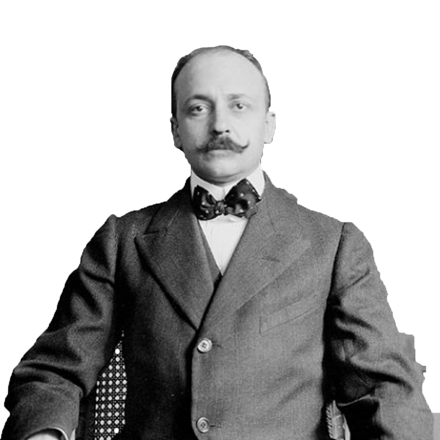
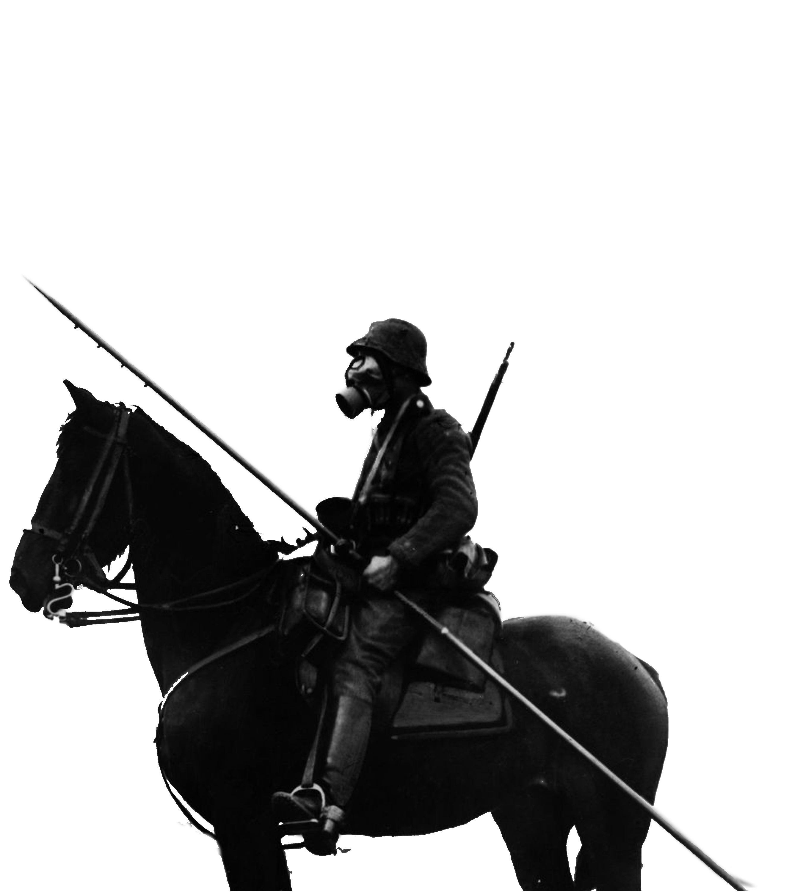
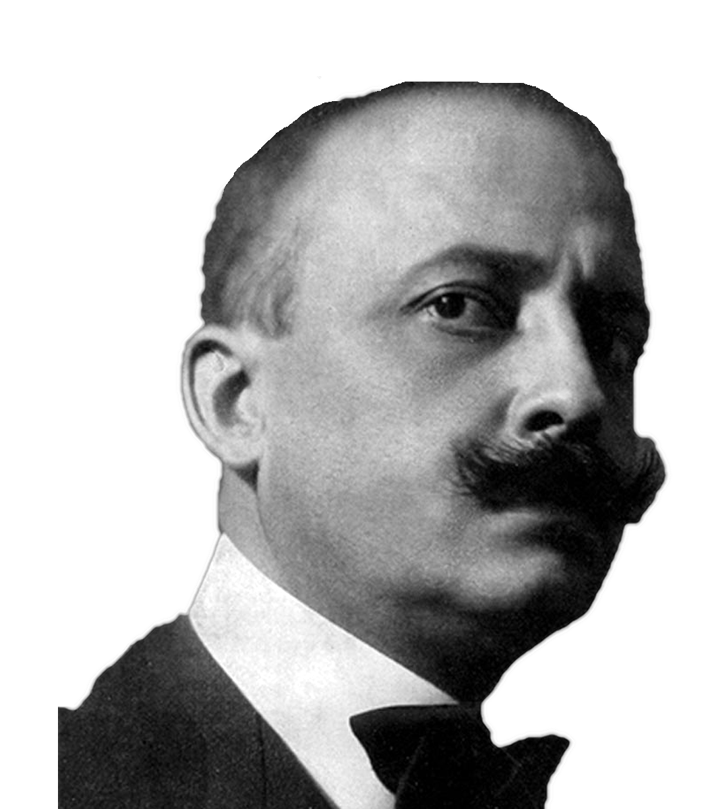
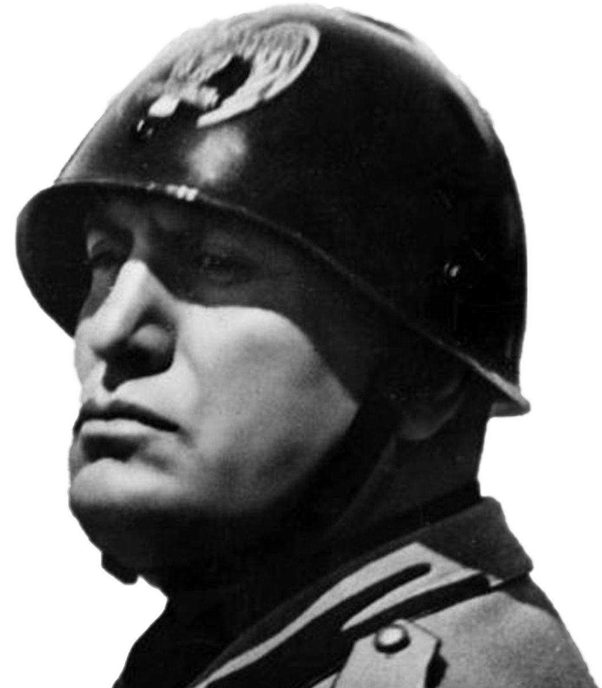
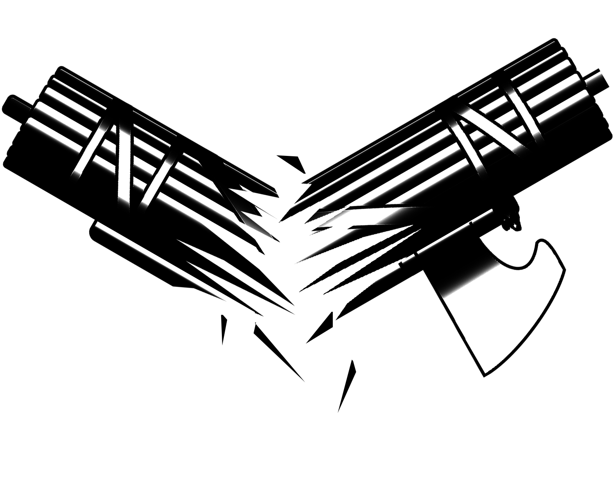

Birth of Futurism
In 1909, Filippo Marinetti found his fingers on the pulse of European society when his Futurist Manifesto was published. A 32-year-old Italian aristocrat born in Egypt, Marinetti was a keen observer of his time. In his writings Marinetti embraced violence and destruction which he saw at the heart of modern life. He was the first driver of the movement called futurism. In love with speed and power, the futurist totally embraced the upheaval brought by the Industrial Age.
In their Manifesto, Marinetti calls for speed and dynamism in art as well as a violent restructuring of the social order. At times his words are bombastic and nearly contradictory:
“And like young lions we ran after Death, its dark pelt blotched with pale crosses as it escaped down the vast violet living and throbbing sky.
But we had no ideal Mistress raising her divine form to the clouds, nor any cruel Queen to whom to offer our bodies, twisted like Byzantine rings! There was nothing to make us wish for death, unless the wish to be free at last from the weight of our courage!”
Later Marinetti calls for war, claiming it to be “the world’s only hygiene” and he would eventually expound upon this in an essay of a similar name.
There is no mistake that what Marinetti was proposing was a radical message of nationalism, Social Darwinism and other warped concepts of the time. At first glance the Manifesto comes off as outrageous; one could almost laugh at it and in fact many people did. But Marinetti never wavered and in the end his call for war and a violent reordering of Europe would be answered twice.

The Futurists and World War I
Of the many accusations history has leveled at the futurist movement “hypocritical” is not among them. In the early days of the First World War, then called the Great War, Marinetti loudly demanded for Italy to honor its alliance with Germany and Austria and join the fighting. Though Italy backed out of its pact with the Germans and Austrians, it did enter the war in May 1915 on the side of Allies.
True to their word, most futurists enlisted. Some, including Marinetti, were placed in the Lombard Volunteer Cyclists unit. As the Great War raged on, countries continued innovating and producing new and more violent weapons: poison gas that liquefied the lungs, powerful machine guns that mowed down soldiers as they tried to storm enemy trenches, grenades and flamethrowers. Though the futurist may have desired such a war few could have known what they were getting into.
As old ideas about warfare were upended by new technology, Europe found itself adrift in a sea of death with no end in sight. War and genocide raged on for four years until Germany, crippled by loss and starving, gave in and signed the Treaty of Versailles. By its end in November, 1918 World War I had claimed the lives of nearly 40 million people.


The Survivors
In the wake of the Great War Europe was broken. The Ottoman Empire, which had stood for more than 700 years, collapsed in a last gasp of genocide. As borders in Europe and the Middle East were redrawn the survivors of the war began to pick up the pieces of their former lives. As fate would have it Filippo Marinetti was one of these people. Though many of his friends were dead Marinetti remained unshaken in his futurist ideology.
The time after World War I is often seen as the end date of the futurist movement, as only a few survived. However, 1918 was the year futurism moved out of the realm of art and into the world of politics. In early 1918 with the war coming to a close, Marinetti started his own political party to promote futurist ideals in governance. The party lasted a year before it was subsumed into the fascist movement lead by Benito Mussolini. Marinetti quickly began espousing the virtues of fascism and in 1919 co-wrote the Fascist Manifesto with Alceste De Ambris. This writing would lay the ground work for the ideology and governance of Italy from 1922 until its defeat in the Second World War.



One More Time
If World War I ended the institutions of the past then World War II was the last expression of their ideas. Fast, deadly and with the idea of ethnic cleansings at its heart, World War II was everything Marinetti had asked for in 1909. Still a proponent of Mussolini, who was now in his second decade as ruler of Italy, Marinetti could look back on an accomplished life when war again broke out in Europe in 1940. Though people had laughed, he had lived to see all that he imagined come to fruition.
Endlessly committed to his ideas Marinetti died on December 2, 1944 at the age of 67, still working for the fascist cause. Though he did not live to see it, soon the world would learn the horrors of what had been brewing in Hitler’s Germany and come to know a weapon so violent that with it came the potential to end all life.
Aftermath
Filippo Marinetti spent his life promoting ideas that to most seem half insane, half ridiculous but he never wavered from them and in the end they found a foothold in the mind of Europe. It would be wrong to overlook the historical importance of this one man simply due to the strangeness of his ideas. It is a sad quirk of humankind that we often despise others for displaying that which we recognize in ourselves.
I believe too often that people are complacent with the past. World War I and II were not inevitable events necessary to move humanity out of certain modes of thinking or to topple empires of the past. They were an outcome of our decisions. Marinetti did not know the future; he simply embraced a side of humanity we too often try to ignore. He made a bet and for a time it paid off, but then the world changed. Ideas of Social Darwinism at an ideological level began to fade in the wake of the Holocaust. Social movements sprang up seeking greater equality and a share of power. For over 70 years the world has kept itself together. This is not the work of fate but of people making conscious choices to move into a more informed and accepting view of one another. That’s not to say that horrible events have not happened since World War II. Vietnam, as an example, is still a scar on the American psyche. But there has been a choice to unify and communicate. From this decision the quality of life the world over has increased in a way that is unprecedented in our species’ history. But now, as nationalism gains strength again, the world is left to decide whether the past will become the future.